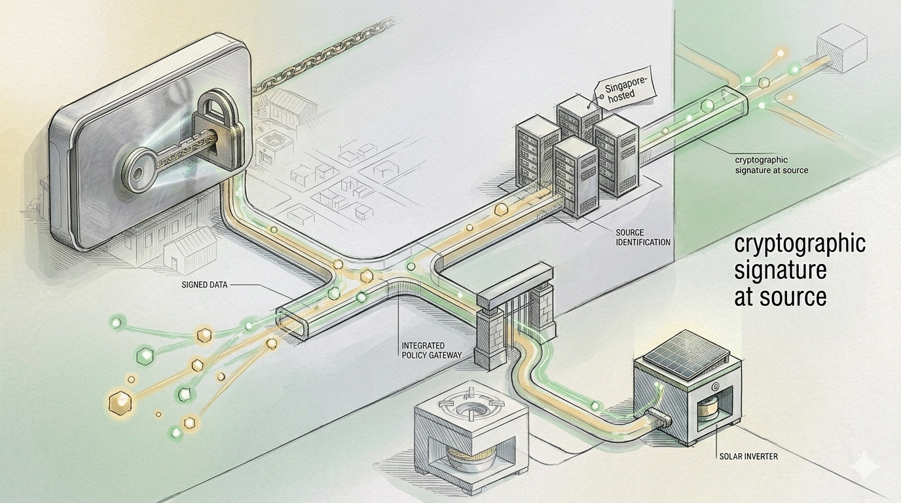
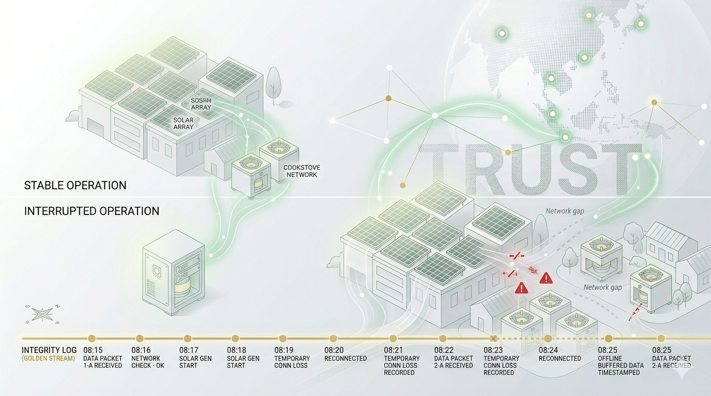

Governments & utilities
National and sub-national programmes for distributed clean energy need transparent monitoring that supports policy goals and international climate reporting.
Digital environmental commodities
Spruces Global Carbon Solutions provides digital MRV (D-MRV) services for distributed renewables in Southeast Asia—so environmental performance can be measured, reported, and verified with the rigour institutional buyers expect.
We serve governments, project developers, verification partners, and buyers who need traceable, tamper-evident renewable generation data—not slide-deck estimates.
National and sub-national programmes for distributed clean energy need transparent monitoring that supports policy goals and international climate reporting.
Reduce issuance risk with continuous, verified evidence streams designed for third-party review.
Understand asset provenance before capital allocation, retirement, or portfolio reporting.
Our service philosophy is simple: verify at source, govern the data, document the gap.
Each monitoring endpoint receives a unique, cryptographically secured identity. Generation readings are signed at source before they enter our pipeline—supporting traceability and reducing disputes over origin.

Field telemetry is transmitted under a documented cross-border architecture, with processing and retention aligned to Singapore-hosted infrastructure and applicable data-protection requirements.

Remote sites face grid instability and connectivity loss. Our integrity-event approach helps distinguish interruption from omission—so reviewers can treat documented gaps according to agreed rules.
We are piloting digital MRV for distributed solar across partner markets in Southeast Asia, with a roadmap to extend the same measurement architecture to additional household and community emission-reduction activities.
Deploying a monitored network to convert small-scale renewable output into transparent, quantified emission-reduction data—designed for alignment with major voluntary carbon market methodologies.
Extending our monitoring and verification services to community clean-cooking programmes—combining health co-benefits with high-integrity social impact credits, subject to methodology selection and validation.
Singapore’s role as a regional hub for environmental markets makes it a natural base for governance, partner engagement, and buyer dialogue. Spruces operates as the single public-facing entity for our digital environmental commodity services.